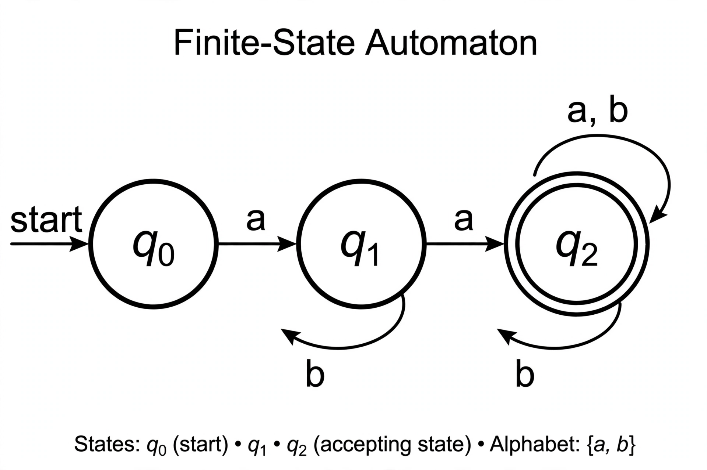

Regular language
| Regular language | |
|---|---|
| Chomsky hierarchy | Type 3 (regular) |
| Recognised by | Finite-state automaton |
| Described by | Regular expression, regular grammar |
| Closure | Union, intersection, complement, concatenation, Kleene star |

In theoretical computer science and formal language theory, a regular language (also called a rational language) is a formal language that can be defined by a regular expression, in the strict sense in theoretical computer science (as opposed to many modern regular expression engines, which have features beyond the expressive power of regular languages).
Equivalently, a regular language is a language that can be accepted by a finite-state automaton — deterministic (DFA) or nondeterministic (NFA). Regular languages form Type 3 of the Chomsky hierarchy, the most restrictive class, and are generated by regular grammars (right-linear or left-linear grammars).
Definition
The set of regular languages over an alphabet Σ is defined recursively: the empty language ∅ and the language {ε} containing only the empty string are regular; for each symbol a in Σ, {a} is regular; and if A and B are regular, so are A ∪ B (union), A·B (concatenation) and A* (Kleene star). Nothing else is regular.
Examples
- All finite languages are regular.
- The language of strings over {a, b} containing an even number of a's.
- The language of binary strings representing multiples of 3.
- Lexical structures of programming languages — identifiers, numbers, keywords — are typically regular, which is why scanners/lexers are built from finite automata.
Closure properties
Regular languages are closed under union, intersection, complement, difference, concatenation, Kleene star, reversal, homomorphism and quotient operations. Membership, emptiness and equivalence are decidable for regular languages — equivalence of two DFAs can be tested by minimisation.
Non-regular languages
The pumping lemma gives a necessary condition for regularity and is the standard tool for proving a language is not regular. Classic non-regular examples include {anbn : n ≥ 0} (balanced a's and b's), the language of palindromes, and {ap : p is prime}. Such languages require memory beyond a finite state count, e.g. a pushdown automaton for context-free languages.
Characterisations
Kleene's theorem establishes the equivalence of regular expressions and finite automata. The Myhill–Nerode theorem gives a necessary and sufficient condition: a language is regular iff its syntactic equivalence relation has finitely many classes, yielding the unique minimal DFA. Regular languages are also exactly those recognised by finite monoids, and are characterised in logic as those definable in monadic second-order logic (Büchi–Elgot–Trakhtenbrot theorem).